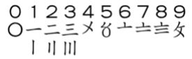
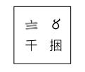

数海拾贝 7
中国民间流行的传统数字苏州码子，是从算筹演变过来的。码子和阿拉伯数字的对应，见下表：

其中一、二、三可以用横划也可以用竖划来写。计数时，仍然采用“一纵十横”的表示方法，以避免误会。苏州码子是一种进位制记数系统，以位置表示大小。因为具有可以用毛笔连笔书、速度快的特点，它主要被用于商业活动，比如记账。在中国广泛采用阿拉伯数字以后，一些地方的老会计仍然喜欢用码子，因为毛笔写出来比阿拉伯数字好看。记数时写成两行，首行用码子记数值，第二行标记量级和计量单位。比如，黍子八千五百捆可以写成：

这里，第一行是数字85，第二行在数字8下面标“千”，说明8的量级是千，数字的单位是捆。后面的两个0就省去了。苏州码子一般不竖着写，而是像算筹一样采用从左向右的横向记法。
苏州码子是明码，稍稍注意一下就可以记住了。为了保密起见，商人们另有一套精彩有趣的暗码，把从一到九的明码按照特征称为旦底、月心、顺边、横目、扭丑、交头、皂脚、其尾、丸壳。
可惜苏州码子在中国内地已经完全绝迹，只有在港澳地区一些老式街市、茶餐厅和中药房偶然可见。我们不应该让它失传。